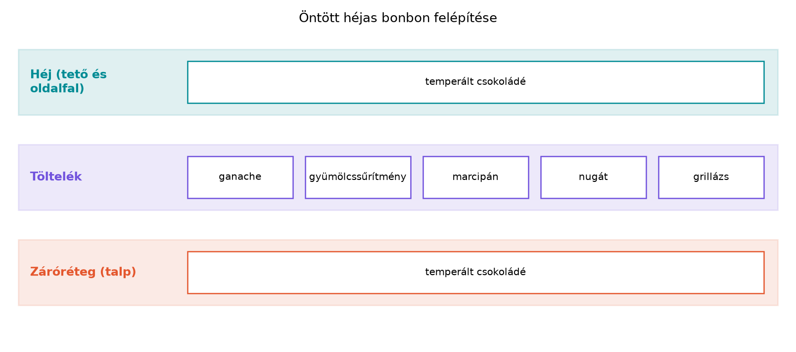
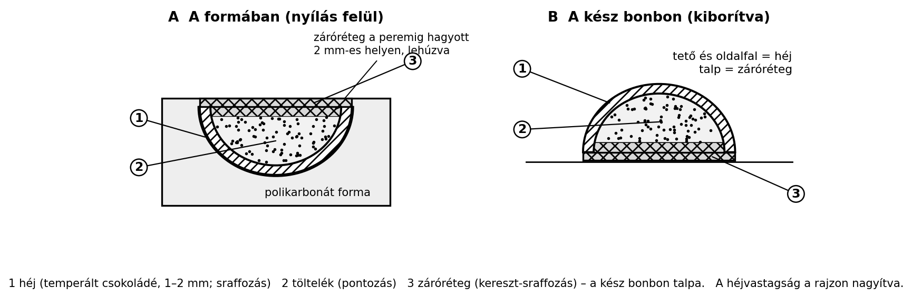
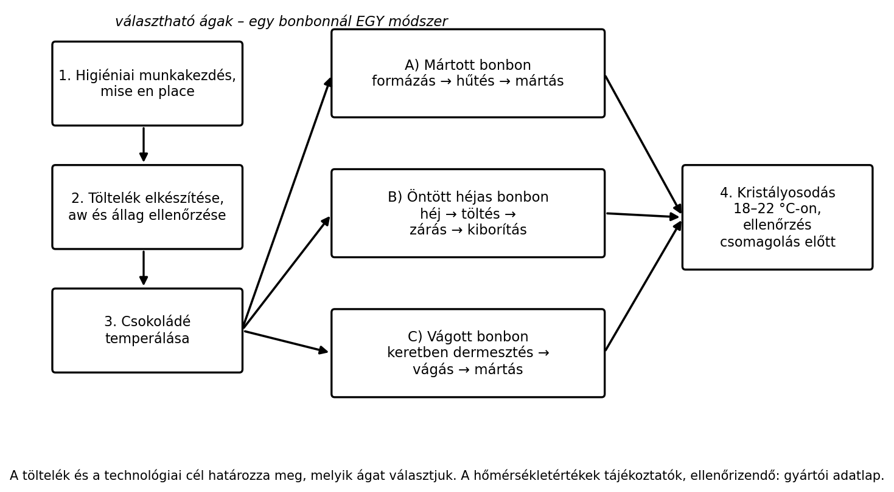

A bonbonkészítést akkor érdemes kézbe venni, amikor a cukrászüzem már túljut a sütemények és torták napi termelésén, és ajándékcsomag, dísztorta-kiegészítő vagy egységes, magas minőségű desszertválogatás kell. A vendég szemében a jó bonbon a precíz munka képe: fényes, vékony héj, egyenletes forma, pontosan adagolt töltelék. Ez csak akkor sikerül, ha a csokoládé temperálása, a töltelék állaga és a zárás technológiája összhangban van. Ebben az alfejezetben a bonbonok közös szerkezetét, csoportosítását, a temperálás bonbonra szabott szabályait, valamint a három fő gyártási módszert tanuljuk meg.
Képzeljünk el egy félbevágott öntött héjas bonbont. Kívül 1–2 mm vastag, ropogós csokoládéhéj, belül lágy vagy sűrű töltelék. A metszeten három réteg jól elkülönül: a kész (kifordított) bonbonban a héj adja a tetőt és az oldalfalakat, a töltelék belül van, a záróréteg a bonbon talpa. A mártott bonbonnál nincs külön héj és zárás, hanem a bevonat egyetlen, minden oldalt körülvevő csokoládéréteg. A vágott bonbonnál a kész masszát keretben dermesztjük, majd kockára vágjuk és általában mártjuk.


Definíció. A bonbon a cukrászati gyakorlatban olyan kis méretű, rendszerint egy-két falatra mért, csokoládéval vagy bevonómasszával bevont vagy héjjal készült töltött édesség. A benne lévő töltelék lehet krém, gyümölcssűrítmény, marcipán, nugát, grillázs vagy ezek kombinációja. A bonbon tömege jellemzően 8–25 g, a pontos tömeg a választék és a forma szerint eltérhet (ellenőrizendő: a termékleírás vagy a megrendelő előírása).
Jogszabály. A csokoládémassza és a tejcsokoládé megnevezésére a 2000/36/EK irányelv és annak magyar átültetése vonatkozik. A felhasznált csokoládéknak tehát meg kell felelniük a saját termékcsoportjuk követelményeinek; a helyi, kézműves elnevezéseket a fogyasztók tájékoztatásáról szóló 1169/2011/EU rendelet szerint kell használni (ellenőrizendő: pontos termékmegnevezések és Magyar Élelmiszerkönyvi előírások).
A bonbonokat két szempontból célszerű csoportosítani: töltelék szerint és gyártási mód szerint.
| Csoportosítási szempont | Kategória | Példa | Jellemző |
|---|---|---|---|
| Töltelék | gyümölcsbonbon | málna, meggy, narancs | sűrített gyümölcs, zselé vagy gyümölcspüré |
| Töltelék | marcipán- és nugátbonbon | ét-marcipán, mandulanugát | tömör, formázható, édes massza |
| Töltelék | grillázsbonbon | mogyoró-, mandulagrillázs | ropogós, zsiradékban pirított magos massza |
| Töltelék | krémbonbon | vajkrém, ganache | lágy, kenhető, hűtést is igényelhet |
| Töltelék | csokoládébonbon | ét-, tej- vagy fehér csokoládé töltelék | intenzív kakaós íz |
| Töltelék | cukorkabonbon | fondán, fudge | sűrű, édes, gyakran kristályos állag |
| Készítési mód | mártott | trüffel | golyózott töltelék bevonva csokoládéba |
| Készítési mód | öntött héjas | polikarbonát formában gyártott | vékony héj, pontos forma, tiszta zárás |
| Készítési mód | vágott | keretben dermesztett, majd darabolt | egyszerűbb forma, gyorsabb gyártás |
A későbbi alfejezetek – Gyümölcs-, marcipán-, nugát- és grillázsbonbonok, valamint Krémbonbonok, csokoládébonbonok és cukorkabonbonok – ezeket a tölteléktípusokat egyenként részletezik. Itt a közös gyártási alapokat tanuljuk meg.
A bonbon négy alapanyagcsoportból épül fel:
A bonbon akkor lesz tárolásálló, ha a töltelék vízaktivitása kicsi, illetve ha a teljes terméket jól záró csokoládéhéj vagy bevonat védi.
Definíció. Vízaktivitás () az élelmiszerben lévő víz elérhetőségét fejezi ki:
ahol a termék feletti vízgőznyomás, pedig a tiszta víz vízgőznyomása ugyanazon a hőmérsékleten. A tiszta víz értéke . Minél több cukor, só vagy más oldott anyag köti meg a vizet, annál alacsonyabb az . A legtöbb romlást okozó baktérium alatt, a penészgombák egy része alatt már nem szaporodik jól (ellenőrizendő: az adott mikrobára vonatkozó élelmiszer-mikrobiológiai táblázat). A száraz töltelékű bonbonoknál – például marcipán, nugát, alacsony nedvességtartalmú ganache – ezért kisebb a mikrobiológiai kockázat, mint a friss tejszínes, vizes gyümölcsös tölteléknél.
A temperálás célja a kakaóvaj stabil kristályformájának kialakítása. A bonbonhéj és a mártóbevonat akkor fényes, akkor zsugorodik ki a formából, és akkor nem törik szét a kivételkor, ha a csokoládét pontosan temperáltuk. A teljes hőmérsékleti görbét a Temperálási módszerek, temper-ellenőrzés és csokoládéhibák alfejezet ismerteti. Itt csak a bonbonkészítésre szabott összefoglalást adjuk.
| Csokoládé | Olvasztás (°C) | Előhűtés (°C) | Munka-hőmérséklet (°C) |
|---|---|---|---|
| Étcsokoládé | 45–50 | 27–28 | 31–32 |
| Tejcsokoládé | 40–45 | 26–27 | 29–30 |
| Fehér csokoládé | 40–43 | 25–26 | 28–29 |
A táblázat tájékoztató érték, ellenőrizendő a felhasznált csokoládé gyártói adatlapja szerint.
Szabály. Bonbonhéj temperálása. A héjhoz és a záróréteghez mindig frissen temperált csokoládét használjunk. A hűtőbe felügyelet nélkül betett, túlhűtött csokoládé a forma falánál megköt, de a közepén kenődik; a túl meleg csokoládé pedig fénytelen marad. Bonbonozás közben a csokoládét tartsuk az adott munka-hőmérsékleten, és időnként keverjük át, hogy a kakaóvaj-kristályok eloszlása egyenletes maradjon. A munkakörnyezet legyen 18–22 °C, a páratartalom 40–60 % (ellenőrizendő: üzemi gyártási ajánlás).
A temperálás ellenőrzésére a kenőkéspróba alkalmazható: vékony csokoládécsíkot kenünk sütőpapírra, és 3–5 perc alatt fényes, zsugorodó réteget várunk. Ha a csokoládé hosszan kenődő, nem fényes, vagy fehéres gyűrű jelenik meg, akkor nincs megfelelően temperálva.
A bonbonkészítésnek három alapvető útja van: mártott, öntött héjas és vágott. Mindhárom módszer közös lépése a töltelék előkészítése és a temperált csokoládé felhasználása, de a sorrend és a forma eltér.

A mártott bonbon töltelékét először megformázzuk – leggyakrabban golyóvá, kúppá vagy hengerré –, majd a kész darabot temperált csokoládéba mártjuk. A trüffel ennek klasszikus példája, amit a Tartós cukrászati készítmények: trüffelkrém, mártás, csomagolás alfejezetben részleteztünk.
A munka menete:
Előnye, hogy nincs szükség polikarbonát formára, és egyedi, kézműves megjelenést ad. Hátránya, hogy a bevonat vastagsága nehezebben egyenletesíthető, és a darabok külső formája soha nem lesz teljesen egységes.
Az öntött héjas bonbon a legprofesszionálisabb módszer. A gyártáshoz polikarbonát forma szükséges, amelynek mélyedései a kész bonbon tükörképét adják. A polikarbonát kemény, hőálló, sima felületű, ezért a bonbon könnyen kiválik belőle.
Technológia röviden. A forma mélyedéseit temperált csokoládéval töltjük, a felesleget kiborítjuk vagy lekaparjuk, így vékony héj marad a falon. Ezután a héjba adagoljuk a tölteléket, majd temperált csokoládéval lezárjuk a tetejét. A teljes eljárást a következő technológiai lap mutatja.
Figyelem. A temperáláshoz forró vízfürdőt használunk, ezért a forrázás veszélye fennáll. A vizet ne töltsük a munkaasztal szélére úgy, hogy a könyök elérje; a csokoládéba egy csepp forró víz sem kerülhet. A forma hűtésekor a hűtő polcát előre tisztítsuk meg, mert a csokoládé átveszi az idegen szagokat.
A vágott bonbonnál a tölteléket – például ganache-t, nugátot, marcipánt – keretben (fémkeret vagy állítható rámában) dermesztjük, majd a kész táblát éles késsel vagy vágógéppel daraboljuk. A darabolás után a kockákat mártjuk vagy félmártjuk, esetleg kakaóporba, porcukorba forgatjuk.
A vágási módszer különösen jól alkalmazható olyan töltelékeknél, amelyek öntve túl lágyak, de keretben dermesztve szeletelhetők. A vágás előtt a masszának kellően merevnek kell lennie ahhoz, hogy a kés nyoma tiszta maradjon. A kést forró vízbe mártva, szárazra törölve vezetjük, így a metszés sima.
Technológiai lap. Étcsokoládé-héjas málnás ganache bonbon, 24 db (polikarbonát formában)
| Nyersanyag | Mennyiség (g) | Megjegyzés |
|---|---|---|
| Étcsokoládé 60 % (héjhoz és záráshoz) | 250 | temperált; a bonbonokra kb. 4 g/db (kb. 100 g) kerül, a maradék a temperáláshoz szükséges többlet, visszaolvasztható |
| Étcsokoládé 60 % (ganache-hoz) | 85 | apróra vágva |
| Tejszín 35 % zsírtartalommal | 55 | hőkezelt |
| Vaj | 8 | szobahőmérsékletű |
| Málnavelő | 20 | hőkezelt, áttört, lehetőleg sűrített |
| Összes tömeg | 418 | a teljes felhasznált nyersanyag, nemcsak a 24 db termék; a ganache-töltelék 168 g (24 × 7 g), a kész bonbon kb. 11 g |
A táblázat tanulási célú receptúra. A gyümölcsös töltelék nagyobb vízaktivitást ad, ezért az ilyen bonbont hűtőben kell tárolni, vagy a gyümölcsvelő helyett részben sűrített gyümölcszselét használjunk (ellenőrizendő: a gyártási receptúra és a HACCP-terv).
Eszközök és gépek. Polikarbonát bonbonforma 24 mélyedéssel, digitális maghőmérő, vízfürdő, műanyag tál, lapát, hőpisztoly vagy hajszárító a forma előmelegítéséhez, gumikesztyű, habzsák, kaparólap, digitális mérleg, hűtő 10–14 °C-ra beállítható zónával (ellenőrizendő: a berendezés beállíthatósága).
Higiéniai munkakezdés. Tiszta munkaruha, hajháló, ékszer levéve, alapos kézmosás. A forma, a tál és a habzsák legyen zsírmentes és teljesen száraz, mert a víz és a zsír is felületi hibát okoz. A felhasznált tejszínt átvételkor ellenőrizzük: ép csomagolás, hűtött szállítás, eltarthatósági idő.
Műveleti sorrend.
Kritikus pontok. A tejszín hőkezelése (85–90 °C-ra melegítés, tanulási példa); a csokoládéra öntve a ganache kb. 40–45 °C-os. A ganache gyártása és töltése gyors, folyamatos munkával történjen: a tölteléket 28–30 °C-on adagoljuk, a kész bonbont a kristályosodás után tároljuk. A tejszínes ganache eltarthatóságát a vízaktivitás és a receptúra határozza meg (ellenőrizendő: HACCP-terv, vízaktivitás-mérés). A kész bonbont 14–18 °C-on tároljuk; a friss tejszínes, magasabb nedvességtartalmú tölteléknél a hűtőbe kerülés lehet indokolt. Az idő- és hőmérsékletértékek tájékoztatók, ellenőrizendő a hatályos GHP-útmutató és a HACCP-terv szerint.
Allergének. A jelölendő csoportok közül a termék tejet és tejszármazékot tartalmaz; a csokoládé szójalecitint és esetleg tejet is tartalmazhat, a málnavelő pedig keresztszennyeződhet diófélékkel a feldolgozóban. Glutén- és tojásmentes receptúra feltételezhető, de az állítást csak a beszállítói adatlapok alapján lehet megerősíteni.
Minőségi jellemzők. Fényes, sima, légbuborékmentes felület; egyenletes, 8–12 g közötti darabtömeg; vékony héj; tiszta, nem folyós töltelék; ropogós csokoládé és lágyan olvadó ganache; tiszta málna-kakaó íz.
Tárolás, eltarthatóság. Szobahőmérsékleten, 14–18 °C-on, 50–60 % relatív páratartalom mellett tárolva az alacsony vízaktivitású, csokoládéval zárt bonbon több hétig is eltartható, ha a pontos recept és a termékvizsgálat ezt alátámasztja. A friss tejszínes, gyümölcsös tölteléknél a minőségmegőrzési időt egyedileg kell meghatározni (ellenőrizendő: HACCP-terv és hatályos útmutató).
Példa. Öntött héjas bonbon gyártásakor egy bonbonhoz átlagosan csokoládé kell a héjhoz és a záráshoz, továbbá töltelék. Hány kilogramm temperált csokoládét készítsünk db bonbonhoz, ha a temperálás, kivétel és csepegés miatt bevonási veszteséggel számolunk?
Adott: , , . Keresett: .
Tehát kb. temperált csokoládét kell előkészíteni (a temperáláshoz szükséges minimális mennyiség ennél nagyobb is lehet, a maradék visszaolvasztható). A töltelék nettó mennyisége:
A teljes késztermék-tömeg (), ami bonbononként ; ez a technológiai lap 8–12 g-os darabtömegébe illik. ∎
Példa. Egy műhelyben málnás ganache-t készítünk a későbbi vágott bonbonhoz. A recept töltelékre szól: étcsokoládé, tejszín. Mennyi csokoládéra és tejszínre van szükség, ha ganache-t kell készítenünk?
A szorzószám: .
Összesen . ∎
Gyakorlat. Készítsünk a technológiai lap szerint 12 db öntött héjas bonbont, és közben ellenőrizzük a héj vastagságát, a töltelék hőmérsékletét és a zárás simaságát.
Cél. A polikarbonát formában végzett héjképzés és zárás gyakorlása.
Eszközök és anyagok. 12 mélyedésű polikarbonát forma, digitális mérleg, maghőmérő, vízfürdő, tál, kaparólap, habzsák, sütőpapír, temperált étcsokoládé, ganache-töltelék.
Higiéniai munkakezdés. Tiszta munkaruha, hajháló, kézmosás. A forma és az eszközök szárazak, zsírmentesek legyenek.
Biztonsági korlát. A temperálást forró vízfürdővel végezzük, ezért a víz és a csokoládé keveredését meg kell akadályozni. A gépi temperálógép csak oktatás után és felügyelet mellett kezelhető.
Eljárás.
Ellenőrzési pontok. A héj a formából kiborításkor már megtartja a fal vastagságát; a töltelék nem folyik a zárás síkja fölé; a kész bonbon enyhe ütésre kiválik; a felület fényes és egyenletes.
Takarítás. A formát langyos vízzel és kímélő mosószerrel mossuk, majd teljesen szárazra töröljük. A csokoládémaradékot elkülönítve gyűjtjük, és a gyártói utasítás szerint újrahasznosítjuk vagy selejtezzük a készletezési szabályok alapján.
Dokumentálás. A tétellapon rögzítsük a temperálási hőmérsékletet, a töltelékmag-hőmérsékletet, a kezdési és zárási időpontot, a felhasznált allergéneket, valamint a késztermék mennyiségét és tömegét.
A bonbonnál az érzékszervi vizsgálat és a tömegellenőrzés nem választható el egymástól.
A kész bonbont mindig a kivétel után néhány órával is ellenőrizzük, mert a fénytelenség vagy a zsírkiütés gyakran csak a kristályosodás befejeződésekor válik láthatóvá.
Hiba: a bonbon kifehéredett a hűtőben való tárolás
után.
Tünet: a fényes felületen szürkés, fehér fátyol jelenik meg. Ok: a
hűtőből kivett hideg csokoládéra nedvesség csapódik, és a cukor
kioldódik, majd kicsapódik (cukorvirágzás). Megelőzés: a kész bonbont
inkább 14–18 °C-on, száraz helyen tároljuk; ha hűtőből vesszük ki, zárt
csomagolásban hagyjuk visszamelegedni. Emellett a zsírvirágzás a rossz
temperálás vagy a túl meleg tárolás miatt is kialakulhat.
Hiba: a bonbon nem jön ki a formából, a héj
reped.
Tünet: kifordításkor a bonbon egy része benne marad, vagy a héj eltörik.
Ok: a csokoládé nem volt megfelelően temperálva, a héj túl vékony, vagy
a hűtés nem volt elég. Megelőzés: a csokoládé munka-hőmérsékletét és a
forma hőmérsékletét ellenőrizzük; a héjat ne hűtsük túlzottan, de
dermedésig tartsuk.
Hiba: a töltelék kifolyik a kész bonbonból.
Tünet: a zárás alól töltelék préselődik ki, a bonbon ragad. Ok: a
töltelék túl lágy, a zárásnál nem maradt elegendő héjmagasság, vagy a
bonbon túl gyorsan melegedett fel. Megelőzés: a töltelék hőmérsékletét
csökkentsük, a záró csokoládét temperáltan hordjuk fel, és a formát
teljes dermedésig tartsuk.
Hiba: a zárás nem sima, „kopoltyús” a bonbon
alja.
Tünet: a bonbon alján csokoládéfelesleg, levegőzárvány vagy kimaradt
rész látszik. Ok: a záró csokoládé túl sűrű, a kaparólapot nem egyetlen
mozdulattal húzták végig, vagy a forma sérült. Megelőzés: a zárás előtt
a csokoládét keverjük át, és a formát ütögessük meg, hogy a buborékok
távozzanak.
Egy cukrászüzem 160 db bonbont vállalt egy céges rendezvényre, három ízben: étcsokoládé-ganache, marcipán-mandula és grillázs. A tulajdonos délelőtt temperálta az étcsokoládét, és elkészítette a ganache-t. Délután a marcipánt is legyártotta, de a hűtőben a kész bonbonokat a grillázstál mellé tette, ahol a mogyorópor a nyitott formára hullott. Másnap reggel az étcsokoládé-gombócok felülete fénytelen volt, és a csomagolás után a raktárban néhány bonbonon fehér pötty jelent meg. A hiba oka a nem megfelelően zárt tárolás és a keresztszennyeződés volt. A tételeket visszavonták a csomagolásból, és selejtezték; a rendelést frissen készített, temperált új tételekkel pótolták. A tanulság: a bonbonok tárolása is gyártási művelet, nem elég a receptet betartani.
A válaszokat a Megoldások elején találod.
1. feladat (A)
Add meg a bonbon definícióját, és sorolj fel három töltelék-, valamint
három gyártási mód szerinti csoportot.
2. feladat (A)
Egy mártott bonbonhoz
temperált étcsokoládé szükséges darabonként. Hány gramm csokoládét
temperáljunk
bonbonhoz, ha
a mártási veszteség?
3. feladat (B)
Egy öntött bonbonforma
mélyedést tartalmaz. Egy bonbonhoz
csokoládé és
töltelék szükséges. Hány kilogramm csokoládé és hány kilogramm töltelék
kell
teljes formához, ha a csokoládéra
veszteséget számolunk?
4. feladat (B)
A málna-ganache receptje
töltelékre:
étcsokoládé,
tejszín,
glükózszirup. Állítsd be a receptet
kész töltelékre, és írd fel a szorzószámos lépést.
5. feladat (C)
Egy tanuló öntött héjas bonbont készít. A héj kivételkor fényes, de a
zárásnál a töltelék fehér gyűrűt hagy, és a kész bonbon alja ragad. Mi
lehet a három legvalószínűbb ok, és milyen sorrendben ellenőriznéd?
6. feladat (D)
Készíts a technológiai lap szerint 12 db öntött héjas bonbont. Töltsd ki
a gyakorlati jegyzőkönyvet: temperálási hőmérséklet,
töltelék-hőmérséklet, kivétel utáni felület, átlagos darabtömeg,
allergének, tárolási mód.
Önellenőrzés – válaszok
1. feladat – megoldás
A bonbon kis méretű, csokoládéval bevont vagy héjjal készült töltött
édesség. Töltelék szerint lehet gyümölcs-, marcipán-, nugát-, grillázs-,
krém-, csokoládé- vagy cukorkabonbon. Gyártási mód szerint lehet
mártott, öntött héjas vagy vágott.
2. feladat – megoldás
Nettó csokoládé:
.
Bruttó szükséglet:
Tehát kb. temperált csokoládét készítsünk.
3. feladat – megoldás
A bonbonok száma:
.
Csokoládé nettó:
.
Csokoládé bruttó:
.
Töltelék:
.
Tehát kb.
csokoládé és
töltelék kell.
4. feladat – megoldás
Szorzószám:
.
Étcsokoládé:
.
Tejszín:
.
Glükózszirup:
.
Összege:
.
5. feladat – megoldás
Legvalószínűbb okok:
1. A töltelék túl meleg volt, ezért a záróréteg alatt megolvadt a
héj.
2. A záró csokoládé nem volt temperálva, ezért lassan dermedt, és a
töltelék beledolgozódott.
3. A forma síkját lekaparáskor nem tisztították meg eléggé, és a
töltelék a peremnél kiszivárgott a zárás alól. Ellenőrzés:
töltelékhőmérséklet, kenőkéspróba, tiszta kaparó.
6. feladat – megoldás
A gyakorlati feladat várt eredménye: a bonbon felülete fényes, a héj
vékony és egyenletes, a töltelék nem folyik. A jegyzőkönyvben
szerepeljen a temperálás munka-hőmérséklete, a töltelék 28–30 °C körüli
töltési hőmérséklete, a kivétel után mért tömeg, az allergének és a
tárolási hőmérséklet. Értékelési szempontok: forma tisztasága, a zárás
síksága, a tömeg egyenletessége, a munkafegyelem, a dokumentálás
pontossága.
A bonbon kis méretű, csokoládéval bevont vagy héjjal készült töltött édesség, amelyet töltelék és gyártási mód szerint csoportosítunk. A legfontosabb alapanyag a temperált csokoládé, amely a héjat és a mártóbevonatot adja. A temperálás során étcsokoládénál 45–50 °C-ra olvasztunk, 27–28 °C-ra előhűtünk, majd 31–32 °C munka-hőmérsékleten dolgozunk; tej- és fehér csokoládénál alacsonyabb hőfokok szükségesek (ellenőrizendő: gyártói adatlap). A három gyártási módszer: mártott, öntött héjas és vágott. A vízaktivitás határozza meg a mikrobiológiai kockázatot és az eltarthatóságot. A temperált, száraz töltelékű, jól zárt bonbon 14–18 °C-on, alacsony páratartalom mellett több hétig is eltartható; a friss tejszínes, gyümölcsös töltelék nagyobb figyelmet és gyakran hűtést igényel. Továbbvitt eredmény. A mártott, öntött héjas és vágott módszert alkalmazzuk a Gyümölcs-, marcipán-, nugát- és grillázsbonbonok és a Krémbonbonok, csokoládébonbonok és cukorkabonbonok alfejezetekben.